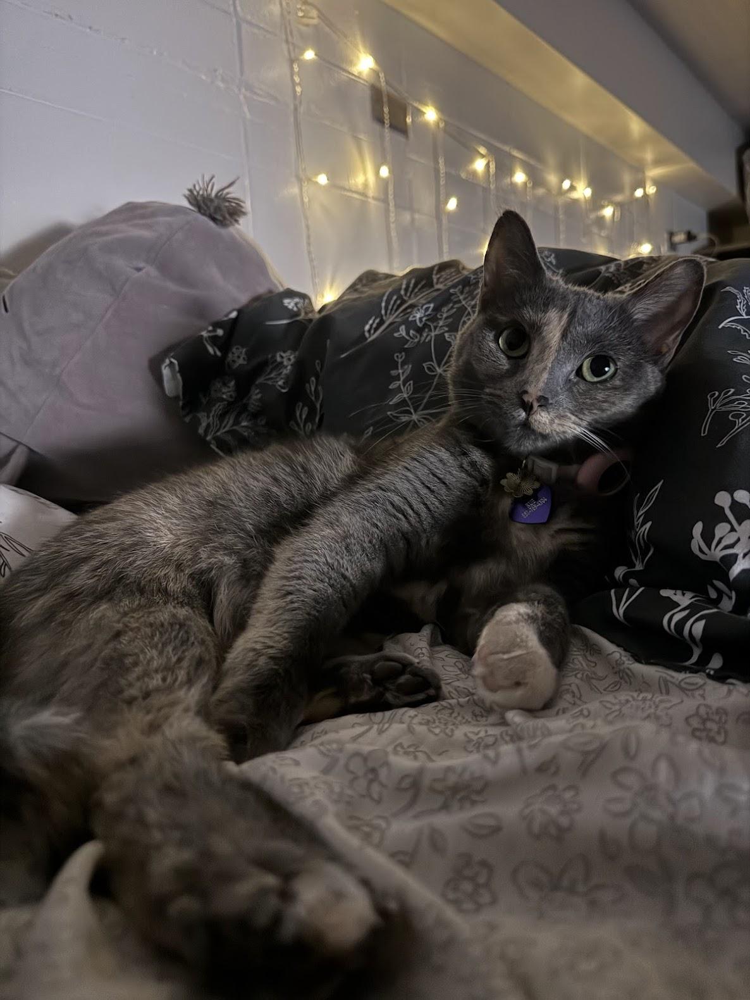

My Cat Rue
By: Bella Pope

Hey! This is my cat Rue. She's three years old and a diluted tortoise shell breed, which is also a short hair breed. I've had her for a little over a year and I got her for free on Craigslist.
She is now my ESA and lives in my dorm with me here on UWEC Campus. I love her so much and am so glad to have her. Although, dorm life with a cat does come with a few pros and cons.
Pros
- Getting to see her after long days at classes
- Cuddling on the futon
- Playing with her favorite toys
- Having other people come see her
- Introducing her to other cats who live on the floor and getting her socialized
Cons
- Having cat litter crumbs tracked all over the room
- The smell of her poop in the air if it's not scooped because she doesn't cover it
- Emptying her litterbox
- When she jumps onto my desk and knocks everything over
- When she chews on my hair when I try to sleep
- She runs out of the room every chance she gets
Overall, Rue is such a wonderful cat and my roomate and I love her. She is a very friendly and social cat. Although, at times she can get a little shy and she hides in my laundry basket, closet, or under the futon. She also has a cat tree with a scratcher on the side because she likes to scratch on everything.
So here's a list of everything she likes to scratch starting with things she scratches the most.
- My backpack
- Her cat scratcher
- The couch
- The carpet
- The side of the bed